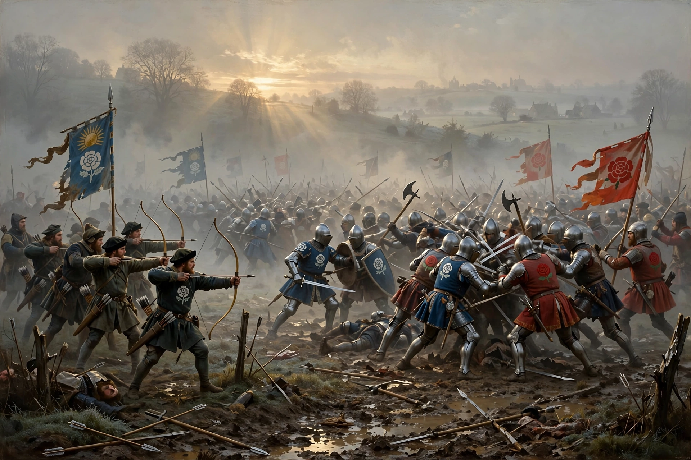

The Battle of Barnet was a decisive engagement in the Wars of the Roses, fought on 14 April 1471 near Barnet, north of London. Edward IV's Yorkist army defeated the Lancastrians led by Richard Neville, Earl of Warwick — the 'Kingmaker' — who was killed.

Fought in thick fog on Easter Sunday, confusion led Lancastrian troops under Oxford to be mistaken for enemies and attacked by their own side, shouting treason. Warwick was killed fleeing. Edward went on to final victory at Tewkesbury weeks later.